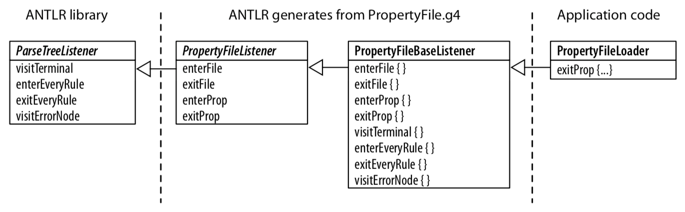
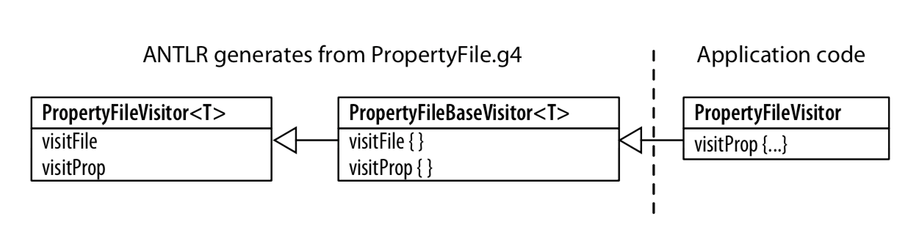

antlr
antlr是一个语法解析的库， 它实现了定义简单的语法， 生成相应的解析语法文件， 支持多种编程语言(java, c++, python)
语法设计
antlr核心语法
| Syntax | Description |
|---|---|
| x | Match token, rule reference, or subrule x. |
| x y ...z | Match a sequence of rule elements |
| (...|...|...) | Subrule with multiple alternatives |
| x? | Match x or skip it |
| x* | Matxh x zero or more times. |
| X+ | Matxh x one or more times. |
| r:...; | Define rule r. |
| r:...|...|....; | Define rule r with multiple alternatives |
Sequence
'+'： 代表1个或多个元素
‘*'： 代表0个或多个元素
示例:
file: (row '\n')*; //sequence with a '\n' terminator
row: field (',', field)*; //sequence with a ',' seperator
field: int; //assume fields are just integers
stats: (stat ';')*; //match zero or more ';' -terminated statements
Choice
使用 '|' 处理选择
示例:
type : 'float' | 'int' | 'void'; // user-defined types
Token Dependecy
使用括号进行声明
示例:
vector: '[' INT+ ']' ; // [1], [1 2], [1 2 3], ....
Nested Phrase
示例:
expr: ID '[' expr ']' // a[1], a[b[1]]
| '(' expr ')' // (1) (a[1]) (((1)))
| INT // 1, 94117
;
运算符优先级
通过定义运算符的顺序(从上到下)来区分优先级， 默认求值顺序为左到右。
示例：
expr: expr '^' expr
| expr '*' expr
| expr '+' expr
| INT
;
(1 + 2 * 4 ^ 4) => 1 + (2 * (4 ^ 4))
词法分析器
匹配器
示例:
ID: ('a'..'Z'|'A'..'Z')+; // match 1-or-more upper or lowercase letters.
ID: [a-zA-Z]+ ; // match 1-or-more upper or lowercase letters
匹配数字：
INT: '0' .. '9'+;
FLOAT: DIGIT + '.' DIGIT*
| '.' DIGIT
;
DIGIT : [0-9];
匹配字符串:
STRING: '"' .*? '"';
匹配空白符和评论
assign : ID (WS|COMMENT)? '=' (WS|COMMENT)? expr (WS|COMMENT)? ;
LINE_COMMENT : '//' .*? '\r'? '\n' -> skip; // Match "//" stuff '\n'
COMMENT : '/*' .*? /*/ -> skip; // Match "/*" stuff "*/"
WS: (' '|'\t'|'\r'|'\n')+ -> skip;
语法和应用代码分离
当我们通过antlr定义语法后， 接下来就需要将语法和应用代码结合起来
antlr提供以下方式:
- 继承parser
- 基于parse-tree listeners
- 实现application基于visitors
首先看了一个简单的实现:
grammer PropertyFile;
@members {
void startFile() { }
void finishFile() { }
void defineProperty(Token name, Token value) { }
}
file : {startFile();} prop+ {finishFile();} ;
prop : ID '=' STRING '\n' {defineProperty($ID, $STRING)} ;
ID : [a-z]+ ;
STRING: '"' .*? '"';
通过antlr生成PropertyFileParser, 实现一个类， 继承PropertyFileParser
class PropertyFilePrinter extends PropertyFileParser {
void defineProperty(Token name, Token value) {
System.out.println(name.getText()+"="+value.getText());
}
}
运行这个application
PropertyFileLexer lexer = new PropertyFileLexer(input);
CommonTokenStream tokens = new CommonTokenStream(lexer);
PropertyFilePrinter parser = new PropertyFilePrinter(tokens);
parser.file();
基于parse-tree listeners的实现
#PropertyFile.g4
file: prop+ ;
prop: ID '=' STRING '\n';
#t.properties
user="parrt"
machine="maniac"
通过PropertyFile.g4， antlr将会生成一个接口PropertyFileListener, 对于每个rule都会生成进入，和离开事件.**
import org.antlr.v4.runtime.tree.*;
import org.antlr.v4.runtime.Token;
public interface PropertyFileListener extends ParseTreeListener {
void enterFile(PropertyFileParser.FileContext ctx);
void exitFile(PropertyFileParser.FileContext ctx);
void enterProp(PropertyFileParser.PropContext ctx);
void exitProp(PropertyFileParser.PropContext ctx);
}
默认实现允许我们仅覆盖和实现我们关心的那些方法， 这里是重新实现PropertyFileLoader， 具有监听器机制:
public static class PropertyFileLoader extends PropertyFileBaseListener {
Map<String, String> pops = new OrderedHashMap<String, String>();
public void exitProp(PropertyFileParser.PropContext ctx) {
String id = ctx.Id().getText()
String value = ctx.STRING().getText();
props.put(id, value);
}
}
这个版本的实现与上个版本的差异是继承于base listener 而不是parser, 流程图如下
运行这个application
ParseTreeWalker walker = new ParseTreeWalker();
PropertyFileLOader loader = new PropertyFileLoader();
walker.walk(loader, tree);
System.out.println(loader.props);
实现应用通过visitors
当我们使用 -visitor 命令， antlr会生成PropertyFileVisitor接口和类PropertyFileBaseVisitor
public class PropertyFileBaseVisitor<T> extends AbstractParseTreeVisitor<T> implements PropertyFileVisitor<T>
{
@Override public T visitFile(PropertyFileParser.FileContext ctx) { ... }
@Override public T visitProp(PropertyFileParser.PropContext ctx) { ... }
}
我们可以复制上面在exitPop里面实现的方法到visitProp里面
public static class PropertyFileVisitor extends PropertyFileBaseVisitor<Void>
{
Map<String,String> props = new OrderedHashMap<String, String>();
public Void visitProp(PropertyFileParser.PropContext ctx) {
String id = ctx.ID().getText(); // prop : ID '=' STRING '\n' ;
String value = ctx.STRING().getText();
props.put(id, value);
return null; // Java says must return something even when Void
}
}
流程为
运行这个application
PropertyFileVisitor loader = new PropertyFileVisitor();
loader.visit(tree);
System.out.println(loader.props); // print results
小试牛刀
使用命令行处理excel / csv文件(基于sql).
语法层: 使用antlr
执行层: 使用pandas api
项目地址: